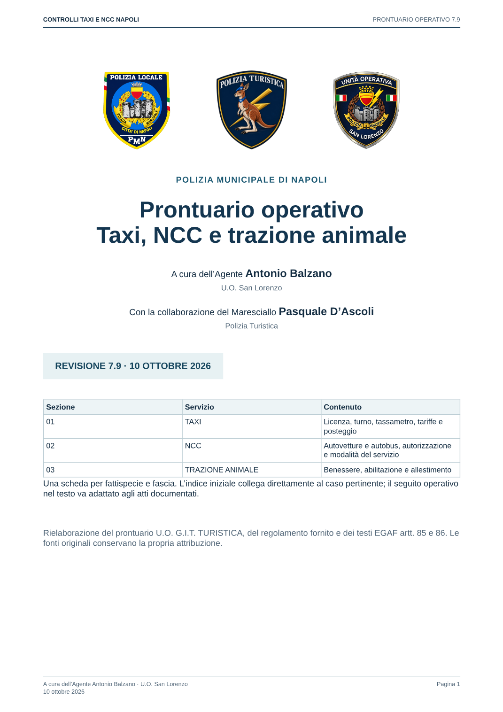
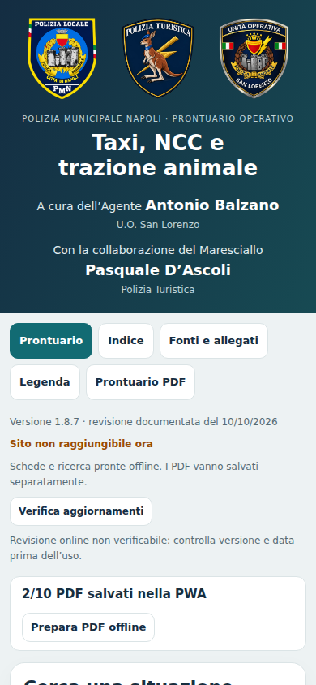

Prontuario Taxi/NCC Napoli · revisione grafica
PWA 1.8.7 / PDF 7.9. Tre stemmi originali e crediti centrati. Anteprima locale del 14 ottobre 2026.
Intestazione mobile


Intestazione desktop
Copertina del PDF

PWA riaperta senza rete

Norme, importi, formule e collegamenti conservati. PDF di 207 pagine con 187 schede, una pagina ciascuna. Data documentale 10 ottobre 2026. Prove in Chromium con profilo temporaneo. Nessun commit, push o deploy.